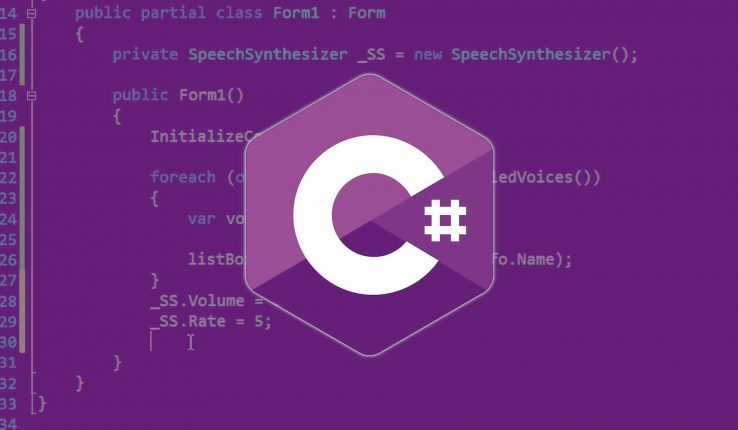

Python é uma linguagem de programação de alto nível, interpretada de script, imperativa, orientada a
objetos, funcional, de tipagem dinâmica e forte. Foi lançada por Guido van Rossum em 1991.
Atualmente, possui um modelo de desenvolvimento comunitário, aberto e gerenciado pela organização sem
fins lucrativos Python Software Foundation. Apesar de várias partes da linguagem possuírem padrões e
especificações formais, a linguagem, como um todo, não é formalmente especificada. O padrão de facto é a
implementação CPython.
Linguagem Java
Java é uma linguagem de programação orientada a objetos desenvolvida na década de 90 por uma equipe de
programadores chefiada por James Gosling, na empresa Sun Microsystems. Em 2008 o Java foi adquirido pela
empresa Oracle Corporation. Diferente das linguagens de programação modernas, que são compiladas para
código nativo, a linguagem Java é compilada para um bytecode que é interpretado por uma máquina virtual
(Java Virtual Machine, mais conhecida pela sua abreviação JVM). A linguagem de programação Java é a
linguagem convencional da Plataforma Java, mas não é a sua única linguagem. J2ME Para programas e jogos
de computador, celular, calculadoras, ou até mesmo o rádio do carro.

Linguagem C#
C é uma linguagem de programação compilada de propósito geral, estruturada, imperativa, procedural,
padronizada pela Organização Internacional para Padronização (ISO), criada em 1972 por Dennis Ritchie na
empresa AT&T Bell Labs para desenvolvimento do sistema operacional Unix (originalmente escrito em
Assembly).
C é uma das linguagens de programação mais populares e existem poucas arquiteturas para as quais
não existem compiladores para C. C tem influenciado muitas outras linguagens de programação (por
exemplo, a linguagem Java), mais notavelmente C++, que originalmente começou como uma extensão para
C.
A linguagem C encontra-se na versão/padrão internacional C17 (ISO/IEC 9899:2018) lançada em junho de
2018, substituindo a versão C11 (ISO/IEC 9899:2011), disponível em ISO e IEC e com suporte para GCC8
e Clang LLVM6.
Linguagem Ruby
Ruby é uma linguagem de programação interpretada multiparadigma, de tipagem dinâmica e forte, com
gerenciamento de memória automático, originalmente planejada e desenvolvida no Japão em 1995, por
Yukihiro "Matz" Matsumoto, para ser usada como linguagem de script. Matsumoto queria desenvolver uma
linguagem de script que fosse mais poderosa do que Perl, e mais orientada a objetos do que Python.
Ruby suporta programação funcional, orientada a objetos, imperativa e reflexiva. Foi inspirada
principalmente por Python, Perl, Smalltalk, Eiffel, Ada e Lisp, sendo muito similar em vários aspectos a
Python. Ruby está entre as 10 linguagens mais populares, de acordo com uma pesquisa conduzida pela
RedMonk.